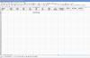
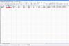
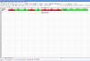
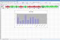

Nous allons manipuler un peu EXCEL (je suis encore sur la version 2003). Je vais vous apprendre à créer un graphique, sous forme d'histogramme, dont les couleurs changeront en fonction d'un tableau.
Pour ceux qui souhaitent prendre en main ce tableur, je vous conseille d'aller voir le tutoriel "Les bases d'EXCEL" fait par pablounet et tarzoune.
Vous verrez, dans ce tutoriel, 3 éléments :
un tableau ;
la mise en forme conditionnelle d'une cellule ;
la superposition de séries dans un graphique (histogramme).
Le but recherché avec ces éléments est de vous apprendre à faire réagir les couleurs en fonction de certaines données d'un tableau.
Ouvrez un nouveau fichier EXCEL. Procédons de la manière suivante :
les cellules B1 à M1 représenteront les mois ;
les cellules B2 à M2 représenteront les dépenses.
J'ai décidé de voir combien de fois j'arrivais à tenir mon objectif fixé. On y reviendra après. Pour le moment, remplissons notre tableau.
Voici le budget dépensé chaque mois :
Janvier : 1000
Février : 400
Mars : 600
Avril : 1400
Mai : 580
Juin : 940
Juillet : 1050
Août : 800,005
Septembre : 799,995
Dans la cellule A1, nous allons donc noter : Budget. Dans la cellule A2, nous noterons : 800.
Sélectionnez toutes les cellules du tableau (de A1 à M2), puis faites un clic droit dessus > Format de cellule... Ne mettez pas de couleur / motif de fond. J'ai juste mis des bordures et modifié la police de caractères.
Vous devez donc avoir un tableau qui ressemble à ceci :
Nous pouvons commencer la mise en forme conditionnelle.
Mon budget est de 800 euros. Si ma dépense est égale ou supérieure à ceux-ci, je considère donc que l'objectif n'est pas atteint. Je choisis donc un indicateur "rouge" pour signaler l'échec et un "vert" pour une réussite.
C'est là que nous allons commencer à mettre les cellules en forme conditionnelle.
Sélectionnez donc la cellule B2. Cliquez sur le menuFormat puis Mise en forme conditionnelle.
Renseignez les champs comme suit.
Condition 1
La valeur de la cellule est
Supérieure ou égale à
=$A$2
Cliquez sur le petit bouton Format puis sur Motif et choisissez le rouge. Cliquez sur le bouton OK de la fenêtre de choix de motif.
Cliquez maintenant sur Ajouter. La condition 2 apparaît. Mettez ce qui suit.
Condition 2
La valeur de la cellule est
Inférieure à
=$A$2
Cliquez sur le bouton Format de la condition 2 et allez mettre vert comme Motif. Fermez les deux fenêtres (format de cellule / mise en forme conditionnelle) en cliquant simplement sur OK.
Vous voyez apparaître le rouge dans votre cellule B2.
Répétez cette opération pour toutes les cellules de la ligne 2, dans le tableau. Toutes les cases supérieures ou égales à 800 sont indiquées en "rouge". Les autres, inférieures, sont en "vert".
Vous venez de créer un indicateur intuitif. Toutes les cellules contenant des données du tableau supérieures ou égales à un chiffre fixé (800, dans ce tuto) seront immédiatement colorées en rouge. Les autres seront en vert. Avec la mise en forme conditionnelle que vous apprenez dans ce tuto, vous obtenez un tableau qui tape à l'oeil. On repère vite lorsqu'on est dans les clous ou non.
Nous allons ajouter un second tableau qui affichera les chiffres s'ils sont verts ou rouges. Il est très important pour la suite.
La ligne 3 sera ce qui est vert et la ligne 4, ce qui est rouge. Dans la cellule A3, nous allons écrire "vert", et en A4 nous mettrons "rouge". C'est juste pour se repérer.
Nous allons maintenant utiliser la fonction "SI". En cellule B3, nous entrerons donc : =SI(B2<A2;B2;"")
=SI(B2<A2;B2;"")
C'est quoi, ce charabia ?
Euh ? Il s'agit d'une fonction présente dans EXCEL : la fonction SI. Cette ligne s'expliquerait simplement de la manière suivante. Si les données de la cellule B2 sont inférieures à celles en A2, alors nous inscrivons les données de la cellule B2 sinon, n'affichons rien.
Vous comprenez donc que les deux guillemets sans rien à l'intérieur ne représentent rien. Vous auriez mis : =SI(B2<A2;B2;"merci trickus68") que... Je vous laisse deviner ce qui se serait produit dans le cas où B2 est >ou= à A2.
Nous allons continuer les fonctions dans les autres cellules. En C3, nous mettrons : =SI(C2<A2;C2;""). En D3, nous mettrons : =SI(D2<A2;D2;""). En E3, nous mettrons : =SI(E2<A2;E2;""). ... ... En M3, nous mettrons : =SI(M2<A2;M2;"").
On prend donc la cellule du dessus, on fait la comparaison avec la A2 (800) et on inscrit un résultat en fonction de celle-ci. Les 3 derniers mois posent un léger problème. Un zéro apparaît. Certainement dû au fait de faire la comparaison entre rien et 800. Cet incident ne dérangera pas pour la suite.
Si vous n'avez pas commis d'erreur en chemin, vous devriez avoir les cellules C3, D3, F3 et J3 égales à celles juste au dessus.
Les autres cellules de la ligne 3 sont vides, à l'exception des cellules K3, L3 et M3 qui contiennent chacune un zéro.
Changeons de couleur et mettons-nous au "rouge", en ligne 4
En B4, nous pouvons donc mettre : =SI(B2>=A2;B2;"")
=SI(B2>=A2;B2;"")
Ce qui signifie : SI les données en B2 sont supérieures ou égales à A2, alors nous inscrivons B2 sinon, rien. La fonction <gras>SI</gras> est assez simple à comprendre. Non ? Remarquez bien les séparations présentes dans la parenthèse. Le point-virgule sert de séparateur entre la condition (à contrôler) et la suite à donner en fonction de son résultat (si VRAI puis si FAUX).
Exemple :
Citation : formule EXCEL
=SI(condition;si VRAI;si FAUX)
Après ce court approfondissement, nous pouvons reprendre où nous en étions. En C4, nous mettrons : =SI(C2>=A2;C2;""). En D4, nous mettrons : =SI(D2>=A2;D2;""). En E4, nous mettrons : =SI(E2>=A2;E2;""). ... ... En M4, nous mettrons : =SI(M2>=A2;M2;"").
Cette partie sera juste un petit peu plus délicate à réaliser et vous aurez sûrement à réfléchir un peu plus pour comprendre le raisonnement du graphique. Mais tout se passera bien. Le Docteur trickus68 ne vous laissera pas tomber en pleine opération. ;) Du coup, ce qui pourrait vous paraître dur au début, ressemblera à un jeu d'enfant vers la fin. :-°
Pour insérer un graphique, nous devons cliquer sur le menu Insertion puis sur Graphique. Une fenêtre s'ouvre et vous pouvez choisir le type de graphique. Par défaut, c'est sur Histogramme.
Cliquez simplement sur le bouton Suivant.
Nous avons maintenant deux onglets :
Plage de données ;
Série.
On va s'intéresser à la Série. Cliquez donc sur cet onglet.
Nous avons maintenant 3 champs qui vont nous intéresser :
Nom ;
Valeurs ;
Étiquettes de l'axe des abscisses (X).
Dans le champs "Nom", mettez : ="base"
="base"
Supprimez le contenu du champ "Valeurs" et laissez le curseur clignoter dans ce champ. Nous devons sélectionner les cases sous les mois. Pour toutes les sélectionner, cliquez sur la cellule B2, maintenez appuyé le bouton gauche de la souris et déplacez le curseur jusque sur M2. Relâchez le bouton gauche de la souris et vous devez avoir ceci dans le champ : =Feuil1!$B$2:$M$2
=Feuil1!$B$2:$M$2
Dans le champ "Étiquettes de l'axe des abscisses (X)", nous allons sélectionner les mois. Supprimez donc son contenu et allez sélectionner les cellules de B1 à M1. Vous devez voir : =Feuil1!$B$1:$M$1
=Feuil1!$B$1:$M$1
Cliquez sur Suivant. Ici, vous pouvez mettre le titre que vous désirez à votre graphique. Allez ensuite dans l'onglet Légende et décochez la case Afficher la légende. Cliquez sur Suivant. Cliquez enfin sur Terminer.
Votre graphique apparaît et il doit ressembler à ça :
Faites donc un clic droit dans la partie blanche du graphique. Un menu apparaît. Cliquez sur Données source. Nous revoilà au début du graphique. Allez dans l'onglet Série et cliquez sur Ajouter.
Une nouvelle série apparaît.
Mettez dans le champ "Nom" : ="vert"
="vert"
Remplissez le champs "Valeurs" en sélectionnant les cellules de B3 à M3. Vous devez avoir : =Feuil1!$B$3:$M$3
=Feuil1!$B$3:$M$3
Cliquez sur OK.
Votre graphique se remplit d'une nouvelle série (mauve ?). Pointez votre curseur dessus. Vous devriez voir un petit rectangle apparaître contenant le nom de série : "vert".
Faites un clic droit dessus. Dans le nouveau menu qui s'affiche, cliquez sur Format de la série de données... Dans l'onglet Motifs, choisissez un ton vert comme aire. Cliquez ensuite sur OK.
Remettez votre curseur sur la partie blanche du graphique. Faites un clic droit dessus. Choisissez Données source. Dans l'onglet Série, cliquez sur Ajouter.
Mettez dans le champ "Nom" : ="rouge"
Remplissez le champ "Valeurs" en sélectionnant les cellules de B4 à M4. Vous devez avoir : =Feuil1!$B$4:$M$4
=Feuil1!$B$4:$M$4
Cliquez sur OK.
Vous voyez votre dernière série apparaître sur votre graphique. Répétez la même opération pour colorer en vert la série précédente.
Allez dans l'onglet Options. Mettez "100" à Superposition. Validez par OK.
Les barres rouges représentent les mois où je n'ai pas respecté mon budget. Les barres vertes représentent ceux où celui-ci a été respecté.
Amusez-vous maintenant à changer la valeur de la cellule A2 pour voir réagir le tableau et le graphique.
J'espère que ce tuto donnera des idées à certains et surtout qu'après sa lecture, certains s'intéresseront d'avantage aux graphiques, fonctions et mise en forme conditionnelle. Ce sont de bons outils EXCEL.
{kind=link}
{kind=link}
{kind=link}
{kind=link}
{kind=link}
{kind=link}